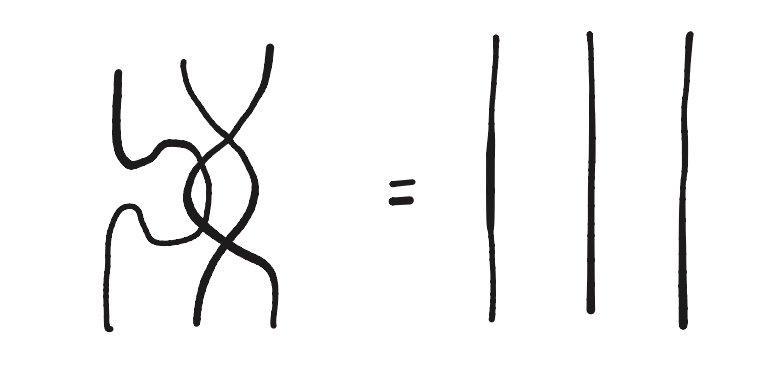
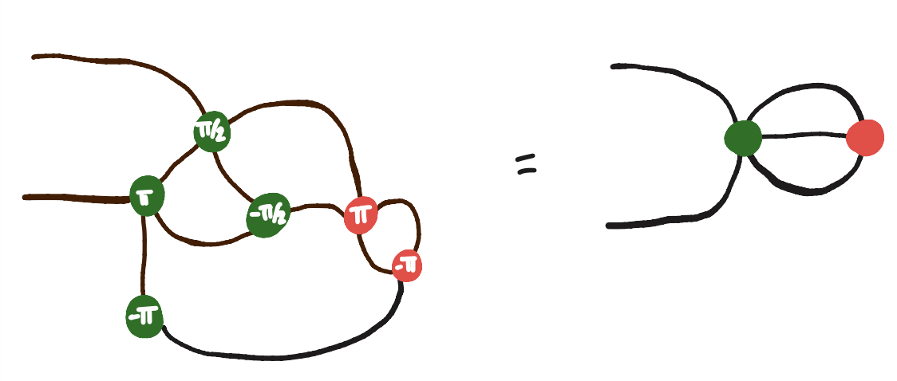
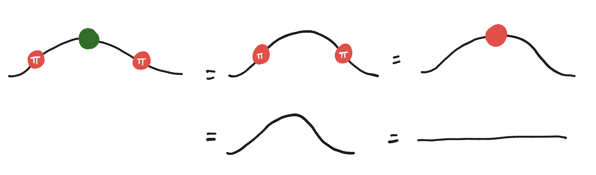
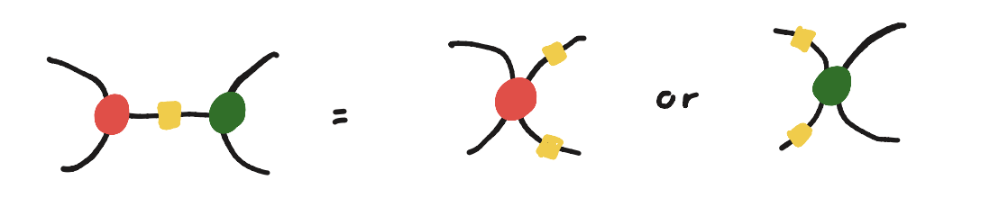
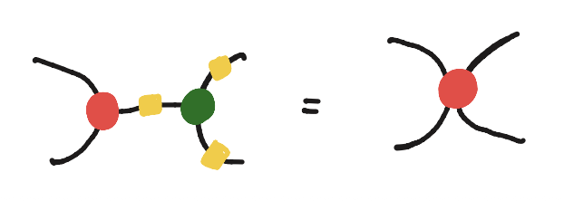
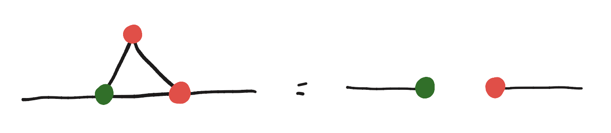
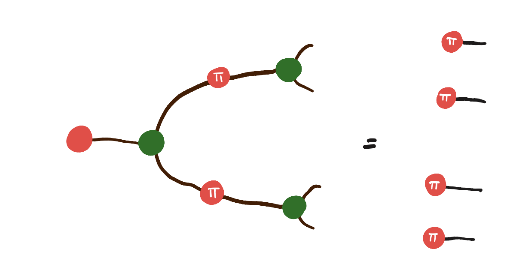
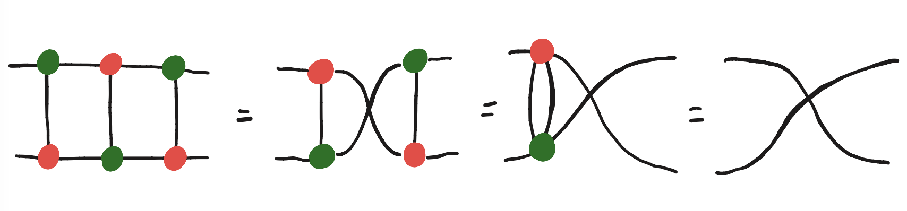
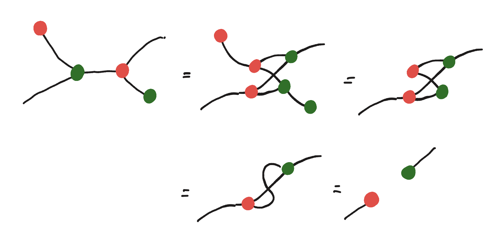
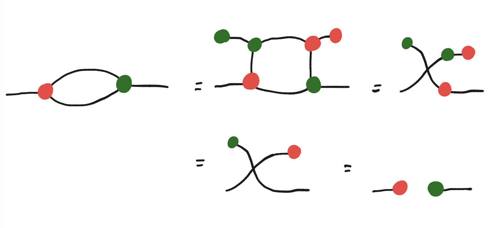

ZX Online
0. General Introduction
1. Yanking
Exercise: Shake the wires to straighten them!

2. Spider Fusion
Exercise: Simplify the following circuit using spider fusion!

3. Identity
Exercise: Use identity removal to turn the following into an identity wire…

4. Colour Change
Exercise: Simplify the diagram using the colour change property:

Exercise: Use the properties of the colour change box to simplify:

5. Leg Chop
Exercise: Use leg chopping to simplify the following diagram.

6. Copy
Exercise: Show that we can use this to simplify the following diagram.

7. Square Popping
Exercise: Let’s use this powerful rewrite to simplify the diagram:

Exercise: Push the green spider through the red one to simplify the following diagram. [Without the copy rule]

8. Final Exercise
Exercise: Prove that Square Popping lets us leg chop! [Without the hopf rule]
